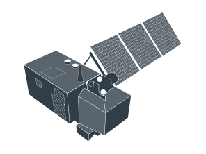
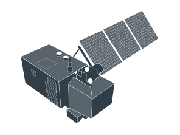
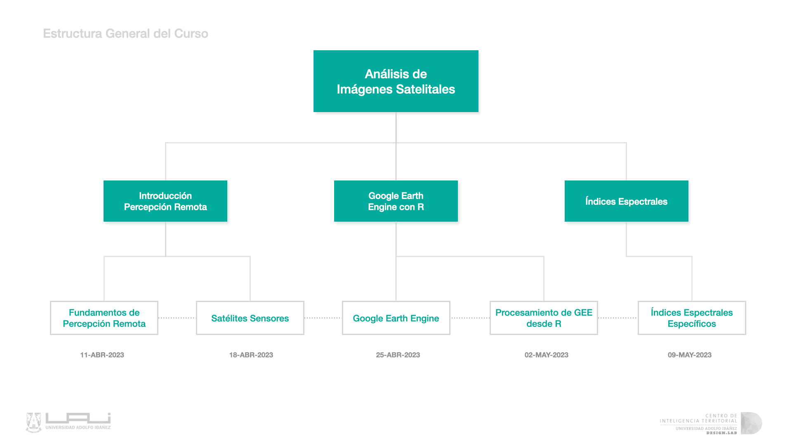

Curso: Geoanálisis de Imágenes Satelitales para SII
Centro de Inteligencia Territorial - UAI
 

1 Introducción
El curso se enfoca en entregar a los asistentes las nociones básicas de Percepción Remota aplicada en diferentes ámbitos, tales como medio ambiente, urbanismo, contaminación, recursos y capital natural. Para ello se utilizará la plataforma Google Earth Engine (GEE), introduciendo el manejo básico para almacenar, visualizar y analizar imágenes satelitales.
1.1 Programa

Profesor: Denis Berroeta González
Coordinador de Investigación en el Centro de Inteligencia Territorial (CIT).
email: denis.berroeta@uai.cl
Ingeniero en Prevención de Riesgos, Magíster en Inteligencia Artificial, Doctorado y Master in Data Science (cursando). Experiencia en en Percepción Remota Profesor en Diplomado de Gestión y evidencia Territorial, Servicio Aerofotogramétrico de la Fuerza Aérea de Chile y SII. Tema de Tesis Detección de Cambios en Imágenes Radar con técnicas de deep learning.
Profesor de cursos y postgrados de Facultad de Gobierno UAI, CIAE de Universidad de Chile, Contraloría General de la República.
Ayudante: Felipe Matas Vicent
Analista de investigación y desarrollo en el Centro de Inteligencia Territorial (CIT).
email: felipe.matas@edu.uai.cl
Ingeniero Industrial con mención en energía. Levantamiento, implementación y desarrollo de nuevas tecnologías y metodologías, soporte a proyectos.
Experiencia en programación, desarrollo de soluciones con TI, toma de muestras y análisis de de datos, probabilidades y Kernel Density. Ayudante en Curso de Ciencia de datos espaciales y Diplomado de Diseño territorial basado en evidencia.